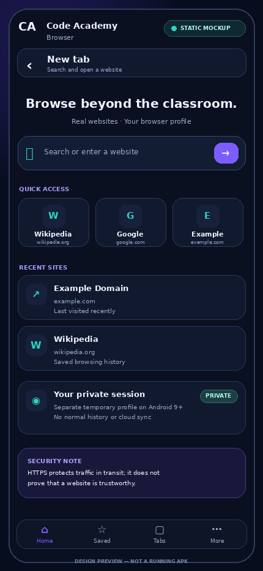
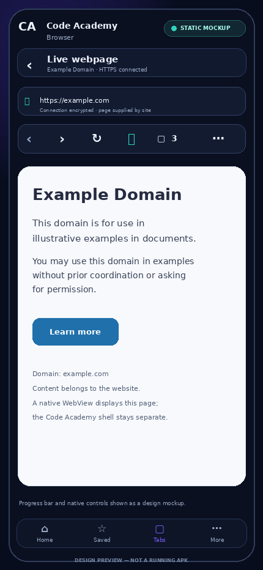
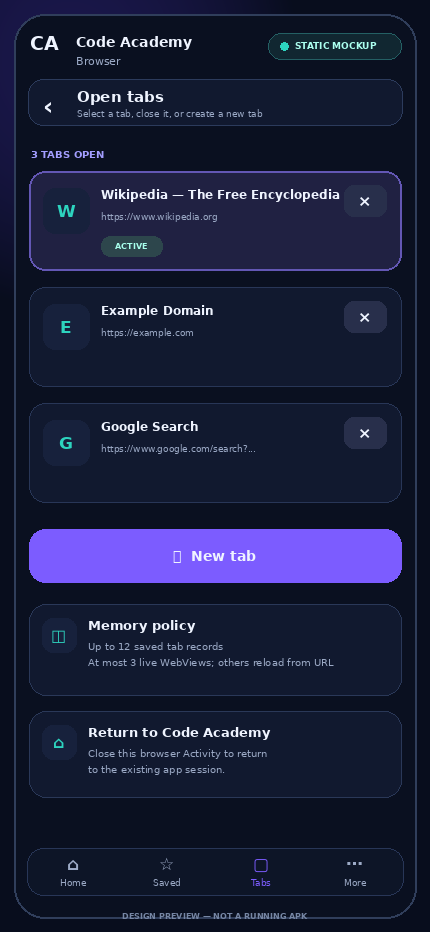
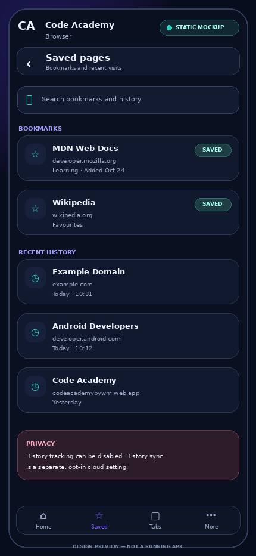
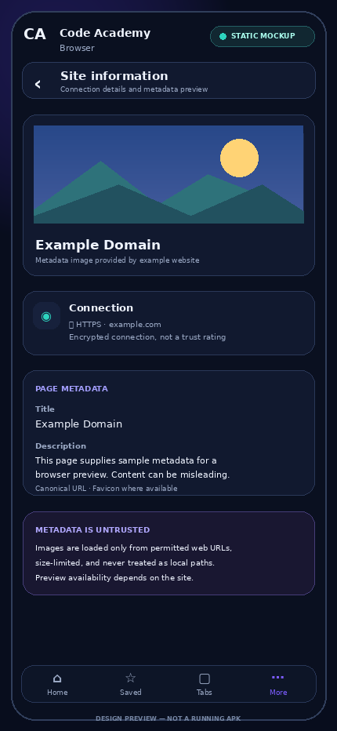
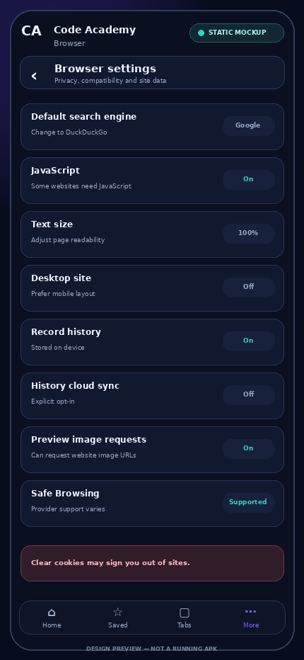
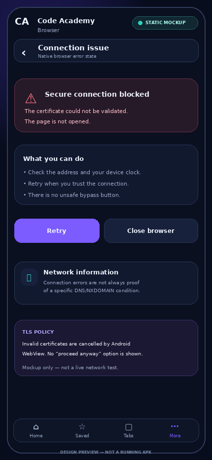

Home / new tabSearch input, quick access, recent sites and privacy note.Static design mockups only — these are not screenshots from a running APK.

Home / new tabSearch input, quick access, recent sites and privacy note.
Live webpage controlsA design example of a real top-level WebView page and browser controls.
Tab switcherActive tab, URL/title, close and new-tab controls.
Bookmarks and historySaved sites, visit times and history sync privacy.
Site information and metadataTitle/description/preview, connection origin and untrusted metadata note.
Settings and privacySearch provider, JS, text size, history and Safe Browsing status.
TLS / connection errorNative warning state and retry/exit path without certificate bypass.